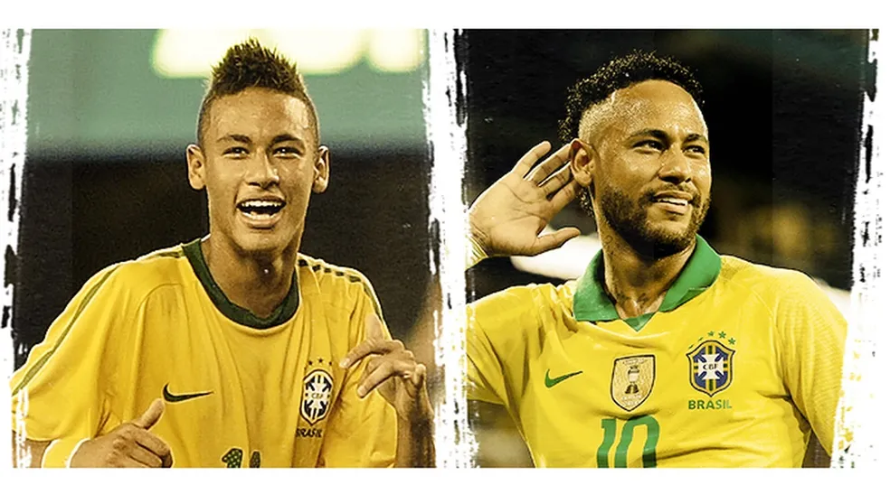
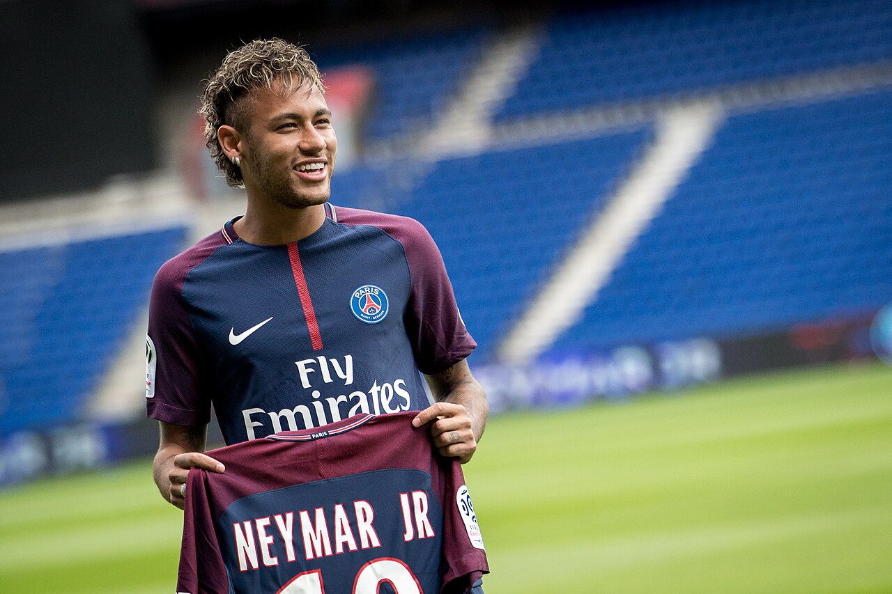
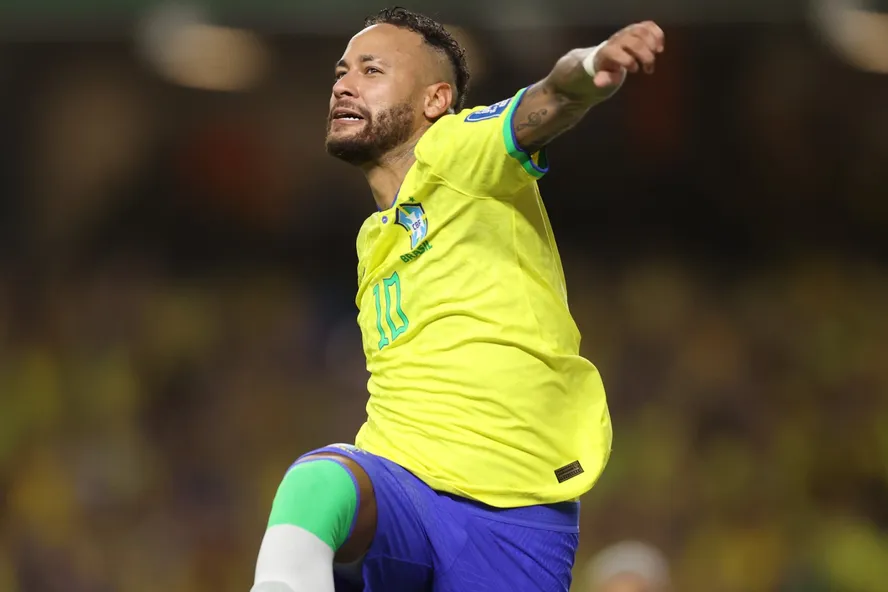
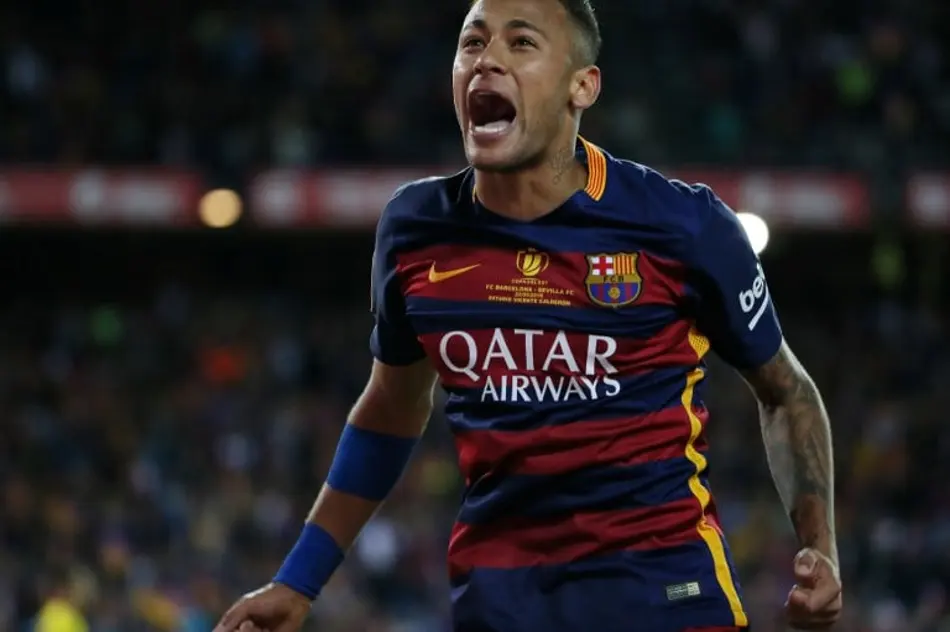
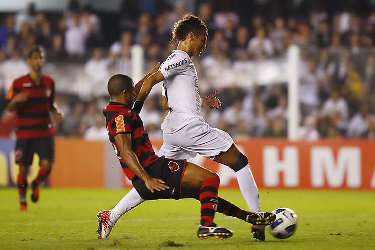
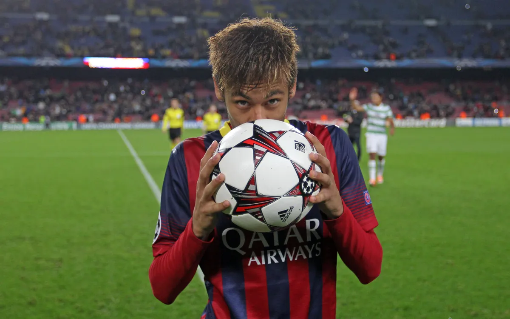

Pergunta 1

Quais os 3 jogadores que Neymar mais atuou ao lado em sua carreira?
Pergunta 2
Em que ano Neymar estreou profissionalmente pelo Santos?
Pergunta 3

Contra quem Neymar marcou seu primeiro gol pela Seleção Brasileira?
Pergunta 4

Quantos gols Neymar tem pela Seleção Brasileira? (dezembro de 2025)
Pergunta 5

Qual o valor da transferência do Neymar para o PSG em 2017?
Pergunta 6

Quantos gols Neymar tem na carreira? (dezembro de 2025, dados do Transfermarkt)
Pergunta 7
Qual temporada Neymar foi vice-campeão da Champions League pelo PSG?
Pergunta 8

Qual ano Neymar mais fez gols na carreira?
Pergunta 9

Qual recorde inédito Neymar fez na Champions League?
Pergunta 10

Em que ano Neymar ganhou o prêmio Puskás, dado ao gol eleito mais bonito do ano?
Pergunta 11

Neymar marcou hat-trick 3 vezes na Champions League, contra quais equipes?
Pergunta 12
Contra que time Neymar marcou um golaço de bicicleta em 2019?